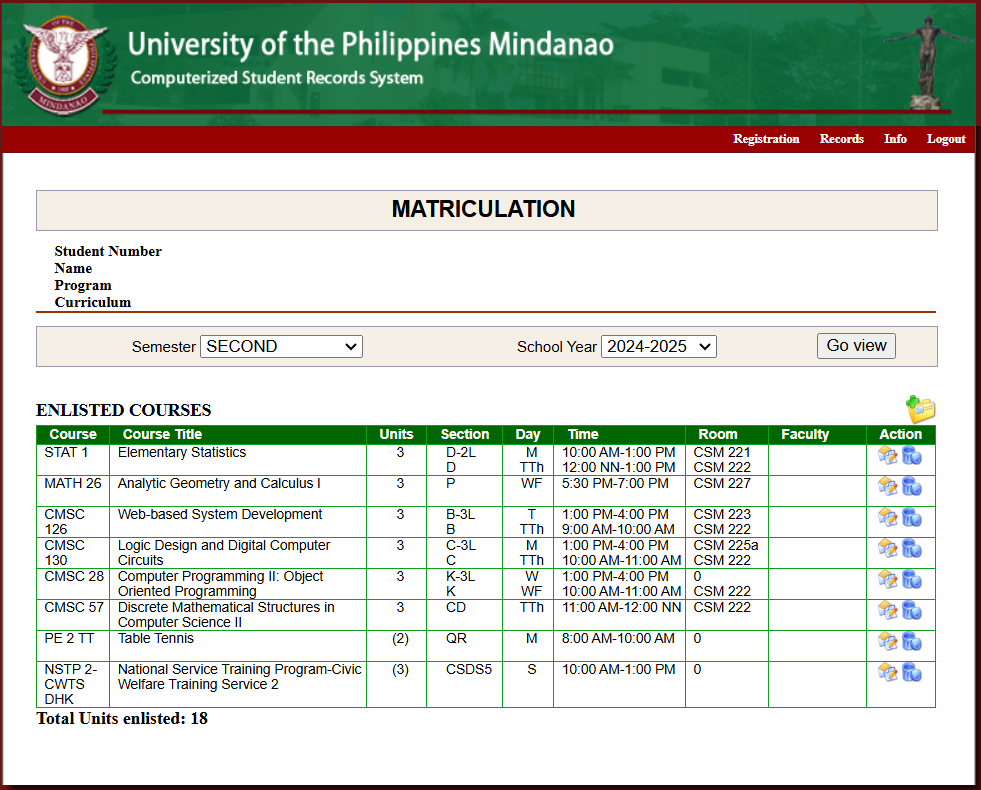
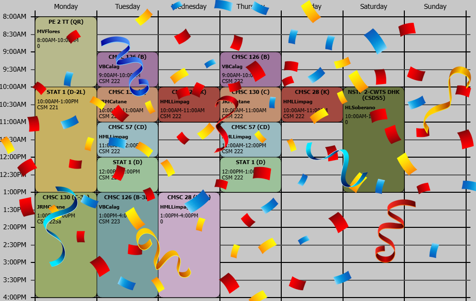

Turn your CSRS schedule into a College Schedule Maker (.csmo) file for https://gizmoa.com/college-schedule-maker!
Status: Ready
Head to the Matriculations Page in the UP Mindanao CSRS website.
Ensure the correct semester and year level is displayed on the website.
Save the webpage as an .html file. (CTRL + S)
Import the .html file
If no errors occur during import, the .csmo file will be ready to download.
Head to Gizmoa's Free College Schedule Maker
Import the .csmo file.
Your schedule is now converted. 🥳
